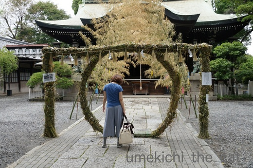
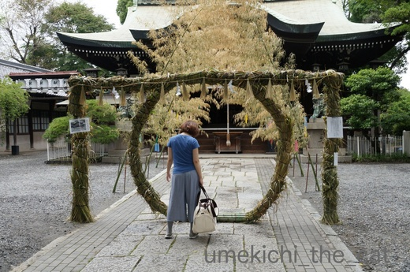

バナ吉 [梅吉]
にゃんこ系ブロガーさんたちが愛猫さんに被らせていた
うさぎやフルーツの被り物。
ぜっっっっっっっったいに被らないと思いながらも我が家もゲットしてみました。
まずは白いうさぎちゃん。
![[猫]](https://blog.ss-blog.jp/_images_e/101.gif) あにすんじゃぁああああああああ〜〜〜〜〜
あにすんじゃぁああああああああ〜〜〜〜〜
梅吉さんごめんなさいね〜。
お似合いなんですけどイヤですねやっぱり。
はいはい。もうしませんよー（うさぎは）
つぎ、バナナ〜。
ども〜、バナ吉やで〜〜。
バナナなりきり！？
これは軽いのと締め付け感が全くないからか嫌がりませんでした。
このままねむれそうやで・・・
うさぎの被り物はアゴのあたりに付いているゴムがキツ目なんですよね。
嫌がる原因はそれかな？
ただいまゴムを取る作業中![[手（チョキ）]](https://blog.ss-blog.jp/_images_e/87.gif)
 ↑ガブッと一押し↑
↑ガブッと一押し↑
6月30日は「夏越の祓」、我が家の隣の神社（小）に行き茅の輪をくぐってきました。

今年は梅吉もキャリーに乗って参加。
みつばちダンスみたいに八の字を描いてくぐって来ましたよー。
この後半年も元気に過ごせます様に！
うさぎやフルーツの被り物。
ぜっっっっっっっったいに被らないと思いながらも我が家もゲットしてみました。
まずは白いうさぎちゃん。
梅吉さんごめんなさいね〜。
お似合いなんですけどイヤですねやっぱり。
はいはい。もうしませんよー（うさぎは）
つぎ、バナナ〜。
バナナなりきり！？
これは軽いのと締め付け感が全くないからか嫌がりませんでした。
うさぎの被り物はアゴのあたりに付いているゴムがキツ目なんですよね。
嫌がる原因はそれかな？
ただいまゴムを取る作業中
6月30日は「夏越の祓」、我が家の隣の神社（小）に行き茅の輪をくぐってきました。

今年は梅吉もキャリーに乗って参加。
みつばちダンスみたいに八の字を描いてくぐって来ましたよー。
この後半年も元気に過ごせます様に！

カフェオレ色の梅吉

梅吉 2023年8月10日 永眠


梅吉と出会った譲渡会

犬猫の理由なき殺処分ゼロ
妄想広告
UMEKICHI 光

爆発的に早い！
時々攻撃的！
Thanks to Mr.Boss365
爆発的に早い！
時々攻撃的！
Thanks to Mr.Boss365

梅吉さん、まさか『可愛いウサギでは笑いがとれないからイヤ！』
だとかないですよねぇ^^;
by ニッキー (2017-07-03 14:06)
そっか！バナナは上に空間がけっこうあるから
締め付け感が無いのね！
あーあーあーバナナほしくなってきた！(笑)
うさぎちゃんは、たしかにあごのゴムを切るか切らないか悩んでます。
切っちゃおうかなあ。
梅吉くん、茅の輪くぐりして完璧ね♪
by リュカ (2017-07-03 14:57)
ニッキーさん＞ハッΣ(ﾟ◇ﾟ；)てっきり締め付け感がイヤなんだと・・・
梅吉は「こんなんじゃおもろないんじゃ〜」って思ったんですよね〜^^;
リュカさん＞そうなの！バナナふわ軽。耳が圧迫されないのもいいのかも。
ただ、先の方がクタッとなっちゃうから少し詰め物をして
張りを出したいな・・・と写真を見て思いました。
ちょっとクタッとなっていると還暦の人の頭巾みたいじゃないー？(≧艸≦)
うちのうさぎは繊維のボロボロが出て来てひどいの。
ゴム切っちゃったら更に酷いことになりそうなので
縫い付けてある縫い目をちまちま外してますww
茅の輪で穢れを祓って来ました＾＾
by ちぃ (2017-07-03 15:57)
ゴムがなんとかなったら見られるのかな？
うさぎの梅さん＾＾♡
楽しみだな(n*´ω`*n)
by muku (2017-07-03 16:29)
mukuさん＞ゴムが取れたら再チャレンジしてみますよーww
かわいくってびっくりしちゃうはず(≧▽≦)
by ちぃ (2017-07-03 16:59)
インスタで被り物したかわいい猫さんを見るたびに、今度こそとチャレンジしては玉砕してます^^;
ふむふむ、締め付け感がポイントなんですね！
バナナ、先がクタッとなったら水戸黄門さまみたいだ(*^▽^*)
茅の輪くぐり、梅吉さんも一緒に行ったんですね♪
近所に神社はいろいろあるんですが、キャリーケースで外出、病院以外行ったことないので、ウチのは嫌がるだろうな・・・。
by ゆきち (2017-07-03 17:10)
バナナというか「水戸黄門」みたいですね(^_^)
by kou (2017-07-03 18:57)
おお。これはひょっとすると、今後
ハロウィンの被り物もいけるかも、ですね。 ^^;
by yes_hama (2017-07-03 21:26)
バナナにあっていますよ～しかもこれは嫌がらないのですね。
同じかぶるだけどモノにひょって苦手なのがあるんですね。
ロッキーはどんな被り物も無理です。
by みぃにゃん (2017-07-03 23:04)
私にも水戸黄門に見えます。うちでは被り物諦めてお絵描きに徹することにしました。
ところでKENT0mgさんのブログで、ちぃさんに超能力があるって書いてあった! ほんと!?
by zombiekong (2017-07-04 00:21)
こういうのを文句言わずに被ってくれたら・・・。
うちの子は無理だろうなぁ＾＾；
by ぽちの輔 (2017-07-04 06:45)
バナ吉さん（笑）似合います（キッパリ！）
うさぎも可愛いに違いない、似合うに違いありません。
茅の輪くぐり、梅吉くんとちぃさんの後ろ姿に「おはようございますw」
by kiki (2017-07-04 10:25)
梅吉先生、ご苦労さま！
後半も元気に笑わせて下さいね〜
当然、ガブッと！^ ^
by KENT0mg (2017-07-04 12:25)
凛々しい・・・こういう被り物するとハンサムが際立つね！
by Ginger (2017-07-04 13:06)
梅吉さん、バナナ似合うよ～ヽ(^o^)丿
ハナはスイカだったー。一瞬だけ写真撮って「はい！オシマイ！」嫌がるのよねー。
HAL、日に日に活発になってます♡
この時期は可愛すぎますね～！
by ミミハナ (2017-07-04 13:39)
ゆきちさん＞ぷぷぷぷっ(≧艸≦)
私は『還暦のお祝いされてる人』と思ったのですが
黄色だったら黄門様ですよねーww
きっとこてつくんにも受け入れてもらえる被り物があるはず！！
いつの日か、期待してま〜す。
kouさん＞あ！kouさんも黄門様！？
あご下のバナナの残り部分が黄門様のおひげっぽいですよね〜(≧▽≦)
もー、バナナじゃなくて黄門様ってことでww
肉球御紋の印籠出すので「ひかえよろうっ！」のお付き合いお願いしますね＾＾
yes_hamaさん＞そうですね！そうですね！！
高さのある魔女の帽子ならいけるかも＾＾
中が空洞になっているのあるかしら・・・・
みぃにゃんさん＞被り物は全部アウトだと思っていたので
これは意外な反応でした＾＾
ロッキー君にもイケるのあるかもしれませんよ〜。
zombiekongさん＞ああ！ここにも黄門様派が＾＾
今度はいっそ潰した形にして黄門度をアップしてみようかしら・・・
KENT0mgさんには上手い事「気」を受け取っていただけた様です。
きっと朝にお参りした天神さんがお力を貸してくれたのでしょう。
天神さん、窮地にある賢者に優しそうじゃない！？
私には猫レーダーしか備わっていないからきっとそーだわww
ぽちの輔さん＞だいだいのにゃんこは嫌がりますよね〜。
梅吉はこんなに大人しくしている事はかつてなかったので
びっくりしちゃいましたww
kikiさん＞似合うでしょーＯ(≧▽≦)Ｏ私もホレボレ・・・・（親バカ）
実はもう一つ被り物が控えていてそれが一番似合いそうなんです。
しかも、おっととほぼお揃い・・・・気になりますよねww
うまく写真が撮れたらアップしますね。お楽しみにー＾＾
朝のご挨拶をいただいたのにお尻を向けたままで失礼いたしましたm(_ _)m
ただいま梅吉と一緒にPCに向かって礼！
KENT0mgさん＞ありがとうございますー。後半も元気に行きます！！
zombiekongさんに超能力者疑惑かけられちゃいましたよー＾＾
お姉様（多分）ホラー好きな方なので研究対象にされない様
気をつけますww
Gingerさん＞被り物で際立つ目ヂカラ＆流し目、でしょうか(≧艸≦)
いい男はやっぱりバナナが似合いますよねーww
ミミハナさん＞ハナスイカ、見ましたよー(≧▽≦)
上向きキョロ目がいい味でしたww
「参ったわねぇ・・・早く終わらないかしら」byハナ（心の声）
HAL君ますますお家に馴染んで来ましたね。
（HAL君、知的な良いお名前ですね！「2001年宇宙の旅」からですか？）
この時期の可愛さは無敵！！ですよね〜。
日に日に活発に＝いたずら度アップ？・・・・・ (^▽^;)
子育てお疲れ様ですm(_ _)m
by ちぃ (2017-07-04 15:52)
あばれうさ吉(本当にこういう名前のうさちゃんいそうだけど～)
＆まったりバナ吉。まんざらでも？
うちの近所ではこんな可愛らしいガチャガチャ見たことがないよ～。
羨ましいよ～。
茅の輪くぐり。梅吉くんも参加したのね。
元気に過ごせますように♪
by emi (2017-07-04 18:37)
ウサギちゃんの嫌がりようスゴイですね。きっと似合うと思うんだけどな～(^.^)
by palpal (2017-07-04 19:40)
emiさん＞うさ吉＆バナ吉、よしもとの芸人さんにいそうじゃないＯ(≧▽≦)Ｏ
私は今までガチャに興味なかったのでいざ欲しいと思った時・・・
「ガチャってどこにあるの・・・」と戸惑いました^^;
目に入っていなかっただけで生活圏に結構あったんですが
うさぎとフルーツはなくってね。
繁華街に会社のあるおっとにお願いしちゃいましたww
ガチャ覗き込んでいたらメイドさんに声かけられたりしたんですってー(≧艸≦)
palpalさん＞↑みなさんのコメントから「うさぎじゃオモロないんじゃ！！」
と思ってたらしいことが判明しましたww
うさぎ、似合うのよー。めっちゃ怒ってたけど・・・
by ちぃ (2017-07-04 20:51)
何度見ても可愛いね〜梅吉さん。
by kiki (2017-07-04 21:58)
kikiさん＞梅吉ー！kikiさんに褒められてるよヾ(*ΦωΦ)ﾉ
アイコンにしちゃおうかしら・・・・
by ちぃ (2017-07-04 23:04)